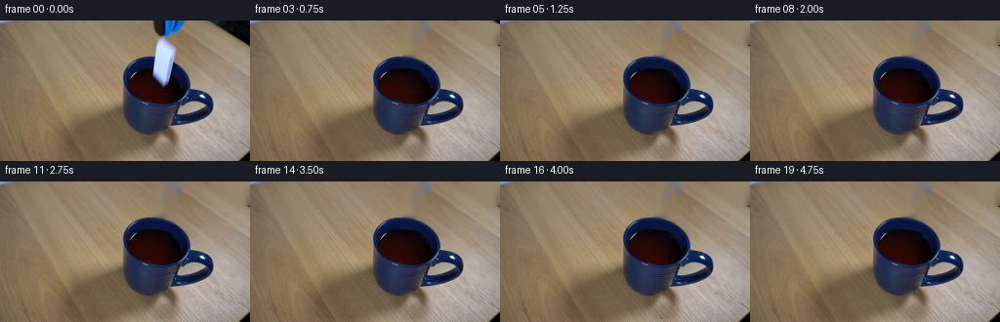
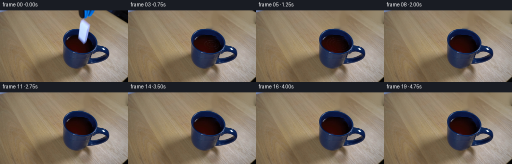
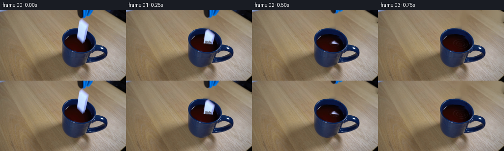

CODING AGENTS AS PIXEL WORLD MODELS
traex/GPT-6.1-Sol · 0046
点击播放 · 原生 RGB 像素
逐轮保存的候选
回放视频、检查图与代码变化。
每份候选均可单独播放。实际图片检查记录在下方工具轨迹中。
候选 01播放与检查图
点击播放 · 原生 RGB 像素

展开代码变化
--- 上一保存版本
+++ 本次保存版本
@@ -0,0 +1,256 @@
+from pathlib import Path
+import math
+import cv2
+import numpy as np
+from PIL import Image
+from scipy import sparse
+from scipy.sparse.linalg import spsolve
+import artifact_io
+
+ROOT = Path(__file__).resolve().parent
+W,H=256,144
+Y,X=np.mgrid[:H,:W].astype(np.float32)
+SOURCE=np.array(Image.open(ROOT/'first_frame.png').convert('RGB'), dtype=np.uint8)
+I=SOURCE.astype(np.float32)
+
+
+def ellipse_coords(cx,cy,a,b,angle):
+ ang=np.deg2rad(angle)
+ u=(X-cx)*np.cos(ang)+(Y-cy)*np.sin(ang)
+ v=-(X-cx)*np.sin(ang)+(Y-cy)*np.cos(ang)
+ return u,v,np.sqrt((u/a)**2+(v/b)**2)
+
+
+def harmonic_fill(original, model, mask):
+ # Preserve the analytic ceramic/liquid boundary and fit its color smoothly
+ # to the measured, unobstructed rim at the edge of the small missing area.
+ ys,xs=np.where(mask)
+ n=len(ys)
+ ix=np.full((H,W),-1,np.int32)
+ ix[ys,xs]=np.arange(n)
+ rows=[];cols=[];data=[]
+ rhs=np.zeros((n,3),np.float64)
+ for k,(y,x) in enumerate(zip(ys,xs)):
+ rows.append(k);cols.append(k);data.append(4.)
+ for dy,dx in ((-1,0),(1,0),(0,-1),(0,1)):
+ yy=np.clip(y+dy,0,H-1);xx=np.clip(x+dx,0,W-1)
+ j=ix[yy,xx]
+ if j>=0:
+ rows.append(k);cols.append(j);data.append(-1.)
+ else:
+ rhs[k]+=original[yy,xx]-model[yy,xx]
+ A=sparse.csr_matrix((data,(rows,cols)),shape=(n,n))
+ result=original.copy()
+ result[ys,xs]=model[ys,xs]+spsolve(A,rhs)
+ return result
+
+
+def prepare():
+ # Original object silhouettes, including the lens-softened edge pixels.
+ poly=np.array([(165.8,18.5),(180.0,30.1),(174.5,57.7),
+ (172.8,61.4),(168.5,67.1),(156.0,54.0),
+ (161.0,22.3)],np.float32)
+ m=np.zeros((H*4,W*4),np.uint8)
+ cv2.fillPoly(m,[np.round(poly*4).astype(np.int32)],255)
+ shape=cv2.resize(m.astype(np.float32)/255,(W,H),interpolation=cv2.INTER_AREA)
+ tilemask=cv2.dilate((shape>0.03).astype(np.uint8),np.ones((5,5),np.uint8))>0
+ tilemask&=(Y>=17)&(Y<=69)&(X>=153)&(X<=183)
+
+ tool_core=(Y<25)&(X>152)&(I[...,0]<95)&(I[...,1]<110)
+ # Both the short blue jaw above the domino and the diagonal black shaft.
+ toolmask=cv2.dilate(tool_core.astype(np.uint8),np.ones((5,5),np.uint8))>0
+ toolmask&=(Y<25)&(X>151)
+ # Do not pick up the white ceramic's top corner.
+ toolmask&=~((X<194)&(Y>17))
+ totalmask=tilemask|toolmask
+ initial=cv2.inpaint(SOURCE,totalmask.astype(np.uint8)*255,5,cv2.INPAINT_TELEA).astype(np.float32)
+
+ uo,vo,qo=ellipse_coords(159.45,63.27,34.32,26.02,10.23)
+ ui,vi,qi=ellipse_coords(160.71,66.75,29.61,17.95,6.36)
+ rng=np.random.default_rng(407)
+ grain=rng.normal(0,.65,(H,W,1)).astype(np.float32)
+ model=initial.copy()
+ # Far inner ceramic wall and the narrow, brighter top glaze of the rim.
+ edge=np.exp(-((1-qo)*26-0.75)**2/(2*.70**2))
+ ceramic=np.zeros_like(I)
+ ceramic[...,0]=8.5+5*edge
+ ceramic[...,1]=21.8+22*edge
+ ceramic[...,2]=61.0+32*edge
+ ceramic+=grain
+ inside_outer=qo<1
+ model[inside_outer]=ceramic[inside_outer]
+
+ # Dark liquid: measured color field, with an unobtrusive fitted continuation
+ # under the initially occluding domino. No invented changes to the mug.
+ xx=(X-161)/30; yy=(Y-67)/18
+ feats=np.stack([np.ones_like(X),xx,yy,xx*xx,xx*yy,yy*yy,
+ xx**3,xx*xx*yy,xx*yy*yy,yy**3],axis=-1)
+ usable=(qi<.99)&~tilemask&(I[...,0]<85)&(I[...,1]<30)&(I[...,2]<40)
+ coeff=np.linalg.lstsq(feats[usable],I[usable],rcond=None)[0]
+ liquid=np.clip(feats@coeff,0,90).astype(np.float32)+grain*.85
+ # The very back of the liquid is shaded by the inner wall.
+ model[qi<1]=liquid[qi<1]
+ # Soft subpixel boundaries, characteristic of this original close shot.
+ outercov=np.clip((1-qo)*25+.5,0,1)[...,None]
+ innercov=np.clip((1-qi)*19+.5,0,1)[...,None]
+ model=initial*(1-outercov)+ceramic*outercov
+ model=model*(1-innercov)+liquid*innercov
+
+ # Fill only the part hidden by the ceramic; the rest of the photographed
+ # cup, wood, and shadow remain the exact original pixels.
+ clean=harmonic_fill(initial,model,tilemask)
+ clean=np.clip(clean,0,255)
+ # Recover a color-correct, premultiplied cutout directly from RGB differences.
+ denom=np.maximum(251-clean[...,2],12)
+ alpha=np.clip((I[...,2]-clean[...,2])/denom,0,1)*tilemask
+ # Extremely faint blue ringing is part of the photographed edge, not a
+ # separate object; suppress stray specks outside the main silhouette.
+ alpha*=cv2.GaussianBlur(shape,(0,0),1.15).clip(0,1)>0.002
+ alpha[alpha<.018]=0
+ premul=(I-clean*(1-alpha[...,None]))*tilemask[...,None]
+ premul[alpha==0]=0
+ premul=np.clip(premul,0,255*alpha[...,None])
+
+ ta=np.clip((clean[...,0]-I[...,0])/np.maximum(clean[...,0]-9,1),0,1)*toolmask
+ ta[ta<.025]=0
+ tp=(I-clean*(1-ta[...,None]))*toolmask[...,None]
+ tp[ta==0]=0
+ tp=np.clip(tp,0,255*ta[...,None])
+ return clean,alpha,premul,ta,tp,qi
+
+
+def warp_cutout(premul,alpha,dx,dy,angle=0):
+ M=cv2.getRotationMatrix2D((167,43),angle,1)
+ M[:,2]+=np.array([dx,dy])
+ p=cv2.warpAffine(premul,M,(W,H),flags=cv2.INTER_LINEAR,borderMode=cv2.BORDER_CONSTANT)
+ a=cv2.warpAffine(alpha,M,(W,H),flags=cv2.INTER_LINEAR,borderMode=cv2.BORDER_CONSTANT)
+ return p,a
+
+
+def composite(img,p,a):
+ return img*(1-a[...,None])+p
+
+
+def water(base,t,qi):
+ age=t-.14
+ if age<=0:return base.copy()
+ cx,cy=167.0,68.4
+ dx=X-cx
+ dy=(Y-cy-.10*dx)/.60
+ radius=np.sqrt(dx*dx+dy*dy+.015)
+ # Radial capillary waves propagate and damp at fixed real-time speed.
+ front=5+23*age
+ trailing=np.clip((front-radius+1)/2,0,1)
+ envelope=np.exp(-age/1.00)*np.exp(-((radius-front+8)/15)**2)*trailing
+ phase=radius*1.04-age*24.0
+ amplitude=.62*envelope
+ slop=np.cos(phase)*amplitude
+ surface=np.clip((1-qi)*14,0,1)
+ smask=surface*(Y>50)
+ rx=X+slop*dx/(radius+1)*.64*smask
+ ry=Y+slop*dy/(radius+1)*.49*smask
+ distorted=cv2.remap(base,rx.astype(np.float32),ry.astype(np.float32),cv2.INTER_LINEAR,borderMode=cv2.BORDER_REFLECT)
+ out=base*(1-smask[...,None])+distorted*smask[...,None]
+ # Small highlight streaks, not bright outlined rings. The blue component
+ # is the same cool overhead reflection present on the ceramic glaze.
+ ridge=np.maximum(np.cos(phase)-.80,0)**1.1*envelope*smask
+ view=.28+.72*np.sin(np.arctan2(dy,dx)+.8)**2
+ shade=np.sin(phase)*1.4*envelope*smask
+ tint=np.stack([shade+ridge*view*16,
+ shade*.5+ridge*view*21,
+ shade*.5+ridge*view*28],axis=-1)
+ # Impact dimple and a briefly disturbed, reflective center.
+ dimple=np.exp(-(radius/5.8)**2)*np.exp(-age/0.21)*smask
+ out+=tint
+ out*=1-dimple[...,None]*.24
+ return out
+
+
+def paint_splash(frame,t,qi):
+ age=t-.14
+ if not (0<age<.66):return frame
+ S=4
+ img=cv2.resize(frame,(W*S,H*S),interpolation=cv2.INTER_CUBIC)
+ layer=np.zeros_like(img)
+ alpha=np.zeros((H*S,W*S),np.float32)
+ # An irregular low crown around the entering domino. All beads stay
+ # inside the cup; the small displaced volume does not overflow the rim.
+ h=8.6*(1-np.exp(-age/.04))*np.exp(-age/.19)
+ rr=5.3+age*12.0
+ for front in [False,True]:
+ th=np.linspace(0,np.pi,65)+(0 if front else np.pi)
+ px=167+rr*np.cos(th)
+ by=68.4+rr*.34*np.sin(th)+.10*(px-167)
+ py=by-h*(.65+.20*np.sin(th*5+.6)+.12*np.sin(th*9))
+ pts=np.stack([px,py],axis=-1)
+ # A shaded liquid sheet, thin at its uneven rising edge.
+ poly=np.concatenate([pts,np.stack([px,by],axis=-1)[::-1]])
+ cv2.fillPoly(layer,[np.round(poly*S).astype(np.int32)],(40,23,26),lineType=cv2.LINE_AA)
+ cv2.fillPoly(alpha,[np.round(poly*S).astype(np.int32)],.72*math.exp(-age/.35),lineType=cv2.LINE_AA)
+ col=(68,66,80) if front else (52,42,47)
+ cv2.polylines(layer,[np.round(pts*S).astype(np.int32)],False,col,max(1,int(S*.52)),cv2.LINE_AA)
+ cv2.polylines(alpha,[np.round(pts*S).astype(np.int32)],False,.65*math.exp(-age/.42),max(1,int(S*.52)),cv2.LINE_AA)
+ # Deterministic ballistic droplets: their arcs follow gravity, with no
+ # loop, camera movement, or artificial persistence between frames.
+ rng=np.random.default_rng(91)
+ for k in range(10):
+ theta=rng.uniform(0,2*np.pi)
+ v=rng.uniform(14,29)
+ vz=rng.uniform(24,43)
+ delay=rng.uniform(0,.045)
+ dt=age-delay
+ if dt<=0 or dt>2*vz/205:continue
+ px=167+np.cos(theta)*(3+v*dt)
+ py=68.4+np.sin(theta)*(3+v*dt)*.37+.10*(px-167)-vz*dt+.5*205*dt*dt
+ if py>=69.5 or not(132<px<188):continue
+ radius=rng.uniform(.36,.65)
+ pos=tuple(np.round(np.array([px,py])*S).astype(int))
+ cv2.ellipse(layer,pos,(max(1,int(radius*S)),max(1,int(radius*S*1.35))),-12,0,360,(55,39,42),-1,cv2.LINE_AA)
+ cv2.ellipse(alpha,pos,(max(1,int(radius*S)),max(1,int(radius*S*1.35))),-12,0,360,.83,-1,cv2.LINE_AA)
+ cv2.circle(layer,(pos[0]-1,pos[1]-1),1,(119,115,126),-1,cv2.LINE_AA)
+ layer=cv2.resize(layer,(W,H),interpolation=cv2.INTER_AREA)
+ alpha=cv2.resize(alpha,(W,H),interpolation=cv2.INTER_AREA)
+ return frame*(1-alpha[...,None])+layer*alpha[...,None]
+
+
+def generate():
+ clean,da,dp,ta,tp,qi=prepare()
+ Image.fromarray(np.uint8(np.clip(clean,0,255))).save(ROOT/'.tmp'/'clean_plate.png')
+ frames=[SOURCE.copy()]
+ for k in range(1,20):
+ t=k/4
+ frame=water(clean,t,qi)
+ # Release almost immediately. Acceleration through the air transitions
+ # to a slower, monotonic descent after the leading end hits the liquid.
+ dt=max(0,t-.035)
+ contact=.105
+ if dt<contact:
+ drop=430*dt*dt
+ else:
+ s=dt-contact
+ drop=430*contact**2+77*s+13*(1-np.exp(-s/.12))
+ if drop<59:
+ p,a=warp_cutout(dp,da,.22*(1-np.exp(-dt*3)),drop,-1.6*min(dt,.65))
+ # The dark opaque liquid hides the immersed lower portion, with
+ # a softly shaded half-pixel wet contact line at its surface.
+ surface_y=68.3+.10*(X-167)
+ above=np.clip(surface_y-Y+.5,0,1)
+ wet=np.exp(-((Y-surface_y+.35)/1.05)**2)
+ p*=above[...,None]
+ a*=above
+ p*=1-.12*wet[...,None]
+ frame=composite(frame,p,a)
+ frame=paint_splash(frame,t,qi)
+ # The empty blue-black jaw is lifted away without disturbing the cup.
+ lift=4.0*t+43*max(t-.25,0)**1.25
+ if lift<28:
+ p,a=warp_cutout(tp,ta,2.2*t,-lift,0)
+ frame=composite(frame,p,a)
+ frames.append(np.uint8(np.clip(np.rint(frame),0,255)))
+ frames=np.stack(frames)
+ artifact_io.save(frames,ROOT)
+ return frames
+
+if __name__=='__main__':
+ (ROOT/'.tmp').mkdir(exist_ok=True)
+ generate()
候选 02播放与检查图
点击播放 · 原生 RGB 像素


展开代码变化
--- 上一保存版本
+++ 本次保存版本
@@ -56,7 +56,7 @@
tilemask=cv2.dilate((shape>0.03).astype(np.uint8),np.ones((5,5),np.uint8))>0
tilemask&=(Y>=17)&(Y<=69)&(X>=153)&(X<=183)
- tool_core=(Y<25)&(X>152)&(I[...,0]<95)&(I[...,1]<110)
+ tool_core=(Y<25)&(X>152)&((I[...,0]<110)|(I[...,2]>I[...,0]+25))
# Both the short blue jaw above the domino and the diagonal black shaft.
toolmask=cv2.dilate(tool_core.astype(np.uint8),np.ones((5,5),np.uint8))>0
toolmask&=(Y<25)&(X>151)
@@ -153,12 +153,12 @@
out=base*(1-smask[...,None])+distorted*smask[...,None]
# Small highlight streaks, not bright outlined rings. The blue component
# is the same cool overhead reflection present on the ceramic glaze.
- ridge=np.maximum(np.cos(phase)-.80,0)**1.1*envelope*smask
+ ridge=np.maximum(np.cos(phase)-.38,0)**2*envelope*smask
view=.28+.72*np.sin(np.arctan2(dy,dx)+.8)**2
- shade=np.sin(phase)*1.4*envelope*smask
- tint=np.stack([shade+ridge*view*16,
- shade*.5+ridge*view*21,
- shade*.5+ridge*view*28],axis=-1)
+ shade=np.sin(phase)*2.6*envelope*smask
+ tint=np.stack([shade+ridge*view*64,
+ shade*.5+ridge*view*71,
+ shade*.5+ridge*view*84],axis=-1)
# Impact dimple and a briefly disturbed, reflective center.
dimple=np.exp(-(radius/5.8)**2)*np.exp(-age/0.21)*smask
out+=tint
可观测工具轨迹
实际执行的命令与返回图片。
命令 1exit 0
/bin/bash -lc 'ls -la && cat prompt.txt && cat GENERATION_RULES.md'
命令 2exit 0
/bin/bash -lc "cat artifact_io.py && python - <<'PY'
from PIL import Image
import numpy as np
im=np.array(Image.open('first_frame.png'))
print(im.shape)
for y in range(0,144,8):
print(y,[(x,tuple(im[y,x,:3])) for x in range(0,256,16)])
PY"命令 3exit 0
/bin/bash -lc "python - <<'PY'
from PIL import Image
import numpy as np
I=np.array(Image.open('first_frame.png')).astype(float)
# chars blue B white W dark liquid L black K table . grey G
for y in range(0,122,2):
s=''
for x in range(116,248,2):
r,g,b=I[y,x]
if b>175 and b>r+25 and r>100:c='W'
elif b>120 and b>r+50:c='B'
elif b>r+15 and b>g+15:c='b'
elif r>g*1.6 and r>15 and g<35:c='L'
elif max(r,g,b)<55:c='k'
elif abs(r-b)<15 and r<120:c='g'
else:c='.'
s+=c
print(f'{y:3d} {s}')
print('x:', ''.join(str((x//10)%10) for x in range(116,248,2)))
PY"命令 4exit 0
/bin/bash -lc "python - <<'PY'
import numpy as np
from PIL import Image
im=np.array(Image.open('first_frame.png')).astype(int)
for y in range(14,70):
row=''
for x in range(145,187):
r,g,b=im[y,x]
row+= ('#' if b>160 and b-r>22 and r>80 else '+' if b>120 and b-r>35 else 'b' if b>r+20 else 'L' if r>g*1.65 and r>15 and g<35 else 'k' if max(r,g,b)<55 else '.')
print('%2d %s'%(y,row))
print(' '+''.join(str(x//10%10) for x in range(145,187)))
print(' '+''.join(str(x%10) for x in range(145,187)))
# high blue component region contour
for y in range(16,69):
xs=np.where((im[y,:,2]>im[y,:,0]+25)&(im[y,:,0]>85)&(im[y,:,2]>155))[0]
xs=xs[(xs>148)&(xs<190)]
if len(xs):print(y,xs.min(),xs.max())
PY"命令 5exit 0
/bin/bash -lc "python - <<'PY'
from PIL import Image
import numpy as np
A=np.array(Image.open('first_frame.png')).astype(int)
for y in range(0,22):
s=''
for x in range(145,256):
r,g,b=A[y,x]
s+='B' if b>90 and b>r+45 else 'b' if b>r+15 else 'k' if max(r,g,b)<60 else 'g' if r<110 else '.'
print(f'{y:2} {s}')
print(' '+''.join(str(x//10%10) for x in range(145,256)))
print(' '+''.join(str(x%10) for x in range(145,256)))
print('mug center rows at x155..180')
for y in [18,20,26,32,38,42,46,50,54,58,62,66,68]:
print(y,[(x,tuple(A[y,x])) for x in range(154,184,2)])
PY"命令 6exit 0
/bin/bash -lc "python - <<'PY'
import importlib.util
for m in ['cv2','scipy','numpy','PIL']: print(m, bool(importlib.util.find_spec(m)))
from PIL import Image
import numpy as np
A=np.array(Image.open('first_frame.png')).astype(int)
for y in range(18,69,2):
print(y,' '.join(f'{x}:{A[y,x,2]}' for x in range(154,183)))
PY"命令 7exit 0
/bin/bash -lc "python - <<'PY'
from PIL import Image
import numpy as np
A=np.array(Image.open('first_frame.png')).astype(int)
for y in range(33,90):
seg=A[y,120:202];r,g,b=seg.T
cond=(r<75)&(g<32)&(b<45)
xs=np.where(cond)[0]+120
# all run bounds
runs=[]
if len(xs):
starts=np.r_[0,np.where(np.diff(xs)>1)[0]+1]; ends=np.r_[starts[1:]-1,len(xs)-1]
runs=[(xs[s],xs[e]) for s,e in zip(starts,ends)]
print(y,runs)
PY"命令 8exit 0
/bin/bash -lc "python - <<'PY'
from PIL import Image
import numpy as np
A=np.array(Image.open('first_frame.png')).astype(float)
for x in range(124,201):
r,g,b=A[30:70,x].T
ys=np.where((b-r>15)&(r<100)&(b>45))[0]+30
if len(ys):print(x,ys.min(),ys.max())
print('sides')
for y in [34,35,36,37,38,39,40,41,42,43,44,45,46]:
print(y,[(x,tuple(A[y,x].astype(int))) for x in [148,150,152,154,156,158,180,182,184,186,188]])
PY"命令 9exit 0
/bin/bash -lc "python - <<'PY'
import cv2, numpy as np
from PIL import Image
A=np.array(Image.open('first_frame.png')).astype(float)
y,x=np.mgrid[:144,:256]; r,g,b=A.transpose(2,0,1)
d=(r<75)&(g<32)&(b<45)&(y>48)&(y<88)&(x>126)&(x<195)
pts=[]
for yy in range(50,86):
xs=np.where(d[yy])[0]
if len(xs):
if yy>52: pts.append((xs.min(),yy))
if yy>=67:pts.append((xs.max(),yy))
pts.extend([(141,50),(148,49),(153,49)])
print(cv2.fitEllipse(np.array(pts,dtype=np.float32)))
# fit cup ceramic rim top outline
pts=[(151,37),(140,40),(135,43),(130,48),(127,53),(126,60),(129,72),(136,82),(151,87),(168,90),(181,84),(191,76),(194,66),(191,55),(185,48),(177,43)]
print('outer',cv2.fitEllipse(np.array(pts,dtype=np.float32)))
PY"命令 10exit 0
/bin/bash -lc "cat > generate.py <<'PY'
from pathlib import Path
import math
import cv2
import numpy as np
from PIL import Image
from scipy import sparse
from scipy.sparse.linalg import spsolve
import artifact_io
ROOT = Path(__file__).resolve().parent
W,H=256,144
Y,X=np.mgrid[:H,:W].astype(np.float32)
SOURCE=np.array(Image.open(ROOT/'first_frame.png').convert('RGB'), dtype=np.uint8)
I=SOURCE.astype(np.float32)
def ellipse_coords(cx,cy,a,b,angle):
ang=np.deg2rad(angle)
u=(X-cx)*np.cos(ang)+(Y-cy)*np.sin(ang)
v=-(X-cx)*np.sin(ang)+(Y-cy)*np.cos(ang)
return u,v,np.sqrt((u/a)**2+(v/b)**2)
def harmonic_fill(original, model, mask):
# Preserve the analytic ceramic/liquid boundary and fit its color smoothly
# to the measured, unobstructed rim at the edge of the small missing area.
ys,xs=np.where(mask)
n=len(ys)
ix=np.full((H,W),-1,np.int32)
ix[ys,xs]=np.arange(n)
rows=[];cols=[];data=[]
rhs=np.zeros((n,3),np.float64)
for k,(y,x) in enumerate(zip(ys,xs)):
rows.append(k);cols.append(k);data.append(4.)
for dy,dx in ((-1,0),(1,0),(0,-1),(0,1)):
yy=np.clip(y+dy,0,H-1);xx=np.clip(x+dx,0,W-1)
j=ix[yy,xx]
if j>=0:
rows.append(k);cols.append(j);data.append(-1.)
else:
rhs[k]+=original[yy,xx]-model[yy,xx]
A=sparse.csr_matrix((data,(rows,cols)),shape=(n,n))
result=original.copy()
result[ys,xs]=model[ys,xs]+spsolve(A,rhs)
return result
def prepare():
# Original object silhouettes, including the lens-softened edge pixels.
poly=np.array([(165.8,18.5),(180.0,30.1),(174.5,57.7),
(172.8,61.4),(168.5,67.1),(156.0,54.0),
(161.0,22.3)],np.float32)
m=np.zeros((H*4,W*4),np.uint8)
cv2.fillPoly(m,[np.round(poly*4).astype(np.int32)],255)
shape=cv2.resize(m.astype(np.float32)/255,(W,H),interpolation=cv2.INTER_AREA)
tilemask=cv2.dilate((shape>0.03).astype(np.uint8),np.ones((5,5),np.uint8))>0
tilemask&=(Y>=17)&(Y<=69)&(X>=153)&(X<=183)
tool_core=(Y<25)&(X>152)&(I[...,0]<95)&(I[...,1]<110)
# Both the short blue jaw above the domino and the diagonal black shaft.
toolmask=cv2.dilate(tool_core.astype(np.uint8),np.ones((5,5),np.uint8))>0
toolmask&=(Y<25)&(X>151)
# Do not pick up the white ceramic's top corner.
toolmask&=~((X<194)&(Y>17))
totalmask=tilemask|toolmask
initial=cv2.inpaint(SOURCE,totalmask.astype(np.uint8)*255,5,cv2.INPAINT_TELEA).astype(np.float32)
uo,vo,qo=ellipse_coords(159.45,63.27,34.32,26.02,10.23)
ui,vi,qi=ellipse_coords(160.71,66.75,29.61,17.95,6.36)
rng=np.random.default_rng(407)
grain=rng.normal(0,.65,(H,W,1)).astype(np.float32)
model=initial.copy()
# Far inner ceramic wall and the narrow, brighter top glaze of the rim.
edge=np.exp(-((1-qo)*26-0.75)**2/(2*.70**2))
ceramic=np.zeros_like(I)
ceramic[...,0]=8.5+5*edge
ceramic[...,1]=21.8+22*edge
ceramic[...,2]=61.0+32*edge
ceramic+=grain
inside_outer=qo<1
model[inside_outer]=ceramic[inside_outer]
# Dark liquid: measured color field, with an unobtrusive fitted continuation
# under the initially occluding domino. No invented changes to the mug.
xx=(X-161)/30; yy=(Y-67)/18
feats=np.stack([np.ones_like(X),xx,yy,xx*xx,xx*yy,yy*yy,
xx**3,xx*xx*yy,xx*yy*yy,yy**3],axis=-1)
usable=(qi<.99)&~tilemask&(I[...,0]<85)&(I[...,1]<30)&(I[...,2]<40)
coeff=np.linalg.lstsq(feats[usable],I[usable],rcond=None)[0]
liquid=np.clip(feats@coeff,0,90).astype(np.float32)+grain*.85
# The very back of the liquid is shaded by the inner wall.
model[qi<1]=liquid[qi<1]
# Soft subpixel boundaries, characteristic of this original close shot.
outercov=np.clip((1-qo)*25+.5,0,1)[...,None]
innercov=np.clip((1-qi)*19+.5,0,1)[...,None]
model=initial*(1-outercov)+ceramic*outercov
model=model*(1-innercov)+liquid*innercov
# Fill only the part hidden by the ceramic; the rest of the photographed
# cup, wood, and shadow remain the exact original pixels.
clean=harmonic_fill(initial,model,tilemask)
clean=np.clip(clean,0,255)
# Recover a color-correct, premultiplied cutout directly from RGB differences.
denom=np.maximum(251-clean[...,2],12)
alpha=np.clip((I[...,2]-clean[...,2])/denom,0,1)*tilemask
# Extremely faint blue ringing is part of the photographed edge, not a
# separate object; suppress stray specks outside the main silhouette.
alpha*=cv2.GaussianBlur(shape,(0,0),1.15).clip(0,1)>0.002
alpha[alpha<.018]=0
premul=(I-clean*(1-alpha[...,None]))*tilemask[...,None]
premul[alpha==0]=0
premul=np.clip(premul,0,255*alpha[...,None])
ta=np.clip((clean[...,0]-I[...,0])/np.maximum(clean[...,0]-9,1),0,1)*toolmask
ta[ta<.025]=0
tp=(I-clean*(1-ta[...,None]))*toolmask[...,None]
tp[ta==0]=0
tp=np.clip(tp,0,255*ta[...,None])
return clean,alpha,premul,ta,tp,qi
def warp_cutout(premul,alpha,dx,dy,angle=0):
M=cv2.getRotationMatrix2D((167,43),angle,1)
M[:,2]+=np.array([dx,dy])
p=cv2.warpAffine(premul,M,(W,H),flags=cv2.INTER_LINEAR,borderMode=cv2.BORDER_CONSTANT)
a=cv2.warpAffine(alpha,M,(W,H),flags=cv2.INTER_LINEAR,borderMode=cv2.BORDER_CONSTANT)
return p,a
def composite(img,p,a):
return img*(1-a[...,None])+p
def water(base,t,qi):
age=t-.14
if age<=0:return base.copy()
cx,cy=167.0,68.4
dx=X-cx
dy=(Y-cy-.10*dx)/.60
radius=np.sqrt(dx*dx+dy*dy+.015)
# Radial capillary waves propagate and damp at fixed real-time speed.
front=5+23*age
trailing=np.clip((front-radius+1)/2,0,1)
envelope=np.exp(-age/1.00)*np.exp(-((radius-front+8)/15)**2)*trailing
phase=radius*1.04-age*24.0
amplitude=.62*envelope
slop=np.cos(phase)*amplitude
surface=np.clip((1-qi)*14,0,1)
smask=surface*(Y>50)
rx=X+slop*dx/(radius+1)*.64*smask
ry=Y+slop*dy/(radius+1)*.49*smask
distorted=cv2.remap(base,rx.astype(np.float32),ry.astype(np.float32),cv2.INTER_LINEAR,borderMode=cv2.BORDER_REFLECT)
out=base*(1-smask[...,None])+distorted*smask[...,None]
# Small highlight streaks, not bright outlined rings. The blue component
# is the same cool overhead reflection present on the ceramic glaze.
ridge=np.maximum(np.cos(phase)-.80,0)**1.1*envelope*smask
view=.28+.72*np.sin(np.arctan2(dy,dx)+.8)**2
shade=np.sin(phase)*1.4*envelope*smask
tint=np.stack([shade+ridge*view*16,
shade*.5+ridge*view*21,
shade*.5+ridge*view*28],axis=-1)
# Impact dimple and a briefly disturbed, reflective center.
dimple=np.exp(-(radius/5.8)**2)*np.exp(-age/0.21)*smask
out+=tint
out*=1-dimple[...,None]*.24
return out
def paint_splash(frame,t,qi):
age=t-.14
if not (0<age<.66):return frame
S=4
img=cv2.resize(frame,(W*S,H*S),interpolation=cv2.INTER_CUBIC)
layer=np.zeros_like(img)
alpha=np.zeros((H*S,W*S),np.float32)
# An irregular low crown around the entering domino. All beads stay
# inside the cup; the small displaced volume does not overflow the rim.
h=8.6*(1-np.exp(-age/.04))*np.exp(-age/.19)
rr=5.3+age*12.0
for front in [False,True]:
th=np.linspace(0,np.pi,65)+(0 if front else np.pi)
px=167+rr*np.cos(th)
by=68.4+rr*.34*np.sin(th)+.10*(px-167)
py=by-h*(.65+.20*np.sin(th*5+.6)+.12*np.sin(th*9))
pts=np.stack([px,py],axis=-1)
# A shaded liquid sheet, thin at its uneven rising edge.
poly=np.concatenate([pts,np.stack([px,by],axis=-1)[::-1]])
cv2.fillPoly(layer,[np.round(poly*S).astype(np.int32)],(40,23,26),lineType=cv2.LINE_AA)
cv2.fillPoly(alpha,[np.round(poly*S).astype(np.int32)],.72*math.exp(-age/.35),lineType=cv2.LINE_AA)
col=(68,66,80) if front else (52,42,47)
cv2.polylines(layer,[np.round(pts*S).astype(np.int32)],False,col,max(1,int(S*.52)),cv2.LINE_AA)
cv2.polylines(alpha,[np.round(pts*S).astype(np.int32)],False,.65*math.exp(-age/.42),max(1,int(S*.52)),cv2.LINE_AA)
# Deterministic ballistic droplets: their arcs follow gravity, with no
# loop, camera movement, or artificial persistence between frames.
rng=np.random.default_rng(91)
for k in range(10):
theta=rng.uniform(0,2*np.pi)
v=rng.uniform(14,29)
vz=rng.uniform(24,43)
delay=rng.uniform(0,.045)
dt=age-delay
if dt<=0 or dt>2*vz/205:continue
px=167+np.cos(theta)*(3+v*dt)
py=68.4+np.sin(theta)*(3+v*dt)*.37+.10*(px-167)-vz*dt+.5*205*dt*dt
if py>=69.5 or not(132<px<188):continue
radius=rng.uniform(.36,.65)
pos=tuple(np.round(np.array([px,py])*S).astype(int))
cv2.ellipse(layer,pos,(max(1,int(radius*S)),max(1,int(radius*S*1.35))),-12,0,360,(55,39,42),-1,cv2.LINE_AA)
cv2.ellipse(alpha,pos,(max(1,int(radius*S)),max(1,int(radius*S*1.35))),-12,0,360,.83,-1,cv2.LINE_AA)
cv2.circle(layer,(pos[0]-1,pos[1]-1),1,(119,115,126),-1,cv2.LINE_AA)
layer=cv2.resize(layer,(W,H),interpolation=cv2.INTER_AREA)
alpha=cv2.resize(alpha,(W,H),interpolation=cv2.INTER_AREA)
return frame*(1-alpha[...,None])+layer*alpha[...,None]
def generate():
clean,da,dp,ta,tp,qi=prepare()
Image.fromarray(np.uint8(np.clip(clean,0,255))).save(ROOT/'.tmp'/'clean_plate.png')
frames=[SOURCE.copy()]
for k in range(1,20):
t=k/4
frame=water(clean,t,qi)
# Release almost immediately. Acceleration through the air transitions
# to a slower, monotonic descent after the leading end hits the liquid.
dt=max(0,t-.035)
contact=.105
if dt<contact:
drop=430*dt*dt
else:
s=dt-contact
drop=430*contact**2+77*s+13*(1-np.exp(-s/.12))
if drop<59:
p,a=warp_cutout(dp,da,.22*(1-np.exp(-dt*3)),drop,-1.6*min(dt,.65))
# The dark opaque liquid hides the immersed lower portion, with
# a softly shaded half-pixel wet contact line at its surface.
surface_y=68.3+.10*(X-167)
above=np.clip(surface_y-Y+.5,0,1)
wet=np.exp(-((Y-surface_y+.35)/1.05)**2)
p*=above[...,None]
a*=above
p*=1-.12*wet[...,None]
frame=composite(frame,p,a)
frame=paint_splash(frame,t,qi)
# The empty blue-black jaw is lifted away without disturbing the cup.
lift=4.0*t+43*max(t-.25,0)**1.25
if lift<28:
p,a=warp_cutout(tp,ta,2.2*t,-lift,0)
frame=composite(frame,p,a)
frames.append(np.uint8(np.clip(np.rint(frame),0,255)))
frames=np.stack(frames)
artifact_io.save(frames,ROOT)
return frames
if __name__=='__main__':
(ROOT/'.tmp').mkdir(exist_ok=True)
generate()
PY
python generate.py"命令 11exit 0
/bin/bash -lc "python - <<'PY'
import numpy as np
from PIL import Image
A=np.array(Image.open('.tmp/clean_plate.png')).astype(int)
for y in range(0,91,2):
s=''
for x in range(120,256,2):
r,g,b=A[y,x]
s+='W' if b>160 and b>r+25 and r>90 else 'B' if b>100 and b>r+45 else 'b' if b>r+15 else 'L' if r>g*1.6 and r>15 and g<35 else 'k' if max(r,g,b)<55 else 'g' if abs(r-b)<15 and r<120 else '.'
print(f'{y:3d} {s}')
print('FRAMES stats')
F=np.stack([np.array(Image.open('frames/%02d.png'%i)) for i in range(20)])
for i in range(20):
d=np.abs(F[i].astype(int)-F[0].astype(int)); print(i,'diff', (d.max(-1)>5).sum(), 'ROI', F[i,53:68,158:175].mean((0,1)))
print('clean center')
for y in range(30,70):
print(y,' '.join('%3d/%3d/%3d'%tuple(A[y,x]) for x in [155,157,159,161,163,165,167,169,171,173,175,177,179,181]))
PY"命令 12exit 0
/bin/bash -lc "python - <<'PY'
import numpy as np
from PIL import Image
for k in [1,2,3]:
A=np.array(Image.open('frames/%02d.png'%k)).astype(int)
print('FRAME',k)
for y in range(16,85,2):
s=''
for x in range(149,184):
r,g,b=A[y,x]
s+='W' if b>160 and b>r+25 and r>90 else 'B' if b>100 and b>r+45 else 'b' if b>r+15 else 'L' if r>g*1.6 and r>15 and g<35 else 'k' if max(r,g,b)<55 else 'g' if abs(r-b)<15 and r<120 else '.'
print(f'{y:3d} {s}')
PY"命令 13exit 0
/bin/bash -lc "python generate.py && python - <<'PY'
import numpy as np
from PIL import Image
import generate
clean,da,dp,ta,tp,qi=generate.prepare()
for k in range(1,11):
A=np.array(Image.open('frames/%02d.png'%k)).astype(int)
D=A-clean
mask=qi<.90
print(k,'water change max',D[mask].max(), 'bright pixels', (D[mask,2]>6).sum())
print('top residual dark:')
for y in range(18):
xs=np.where((clean[y,:,2]>clean[y,:,0]+15)&(np.arange(256)>151))[0]
if len(xs):print(y,xs)
F=np.stack([np.array(Image.open('frames/%02d.png'%i)) for i in range(20)])
print('shape',F.shape,F.dtype,'frame zero exact', np.array_equal(F[0],np.array(Image.open('first_frame.png'))))
PY"保存候选 2 份；完成命令 13 次；可验证图片返回 0 张。原始 API 响应与完整日志保留在本地。